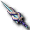
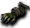
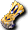

提供情報或編輯請求，請到情報提供公佈欄、編輯公佈欄。
Lv1～20
Lv10左右為止在小烏鵝等處隨便練。
懷念過去，試著做做初心者任務也不錯。
因為有轉職的獎勵點數、戰士時代累積的裝備充實度、
以及能從戰士繼承的攻擊SLv等優勢，所以前期應該會很輕鬆。
- 或者也可以到學會刺擊之槍的Lv5為止都在小烏鵝練，
以交流廣場為據點去魯克西翁森3也是一個辦法。
（主要是瘋狂獨眼怪、扎德，稍強一點的有安迪爾斯獨眼怪等。）
即便如此，仍建議從Lv11左右開始換到下面的練功場。
學會刺擊之槍後就拼命使用，以快速學會爆裂灰燼為目標吧。
努力的話，Lv20前就能學會爆裂灰燼。（←寫這段的本人是Lv18）
練功場數量多、相對比較主動攻擊的盧亞斯森4很推薦。
等級適度提升後，盧亞斯森3、魯克西翁地下城1等也能練。
Lv21～40
Lv20幾的時候在各個森林或地下城的淺層提升等級吧。
如果有副角色或有資產，裝備巴西列烏斯王冠或后冠會比較好。
因為HP等能力值能大幅提升，前期特別有利。
沒有的話就裝備艾斯塔斯提戈或斯泰林斯吧。
因為專精於前衛用的性能所以性能很高，
想為了練技能多一點DEX的時候也很方便。
那種情況下，♀騎士也有米斯特赫達這個選擇，
但DEX值不變、防禦能力又較差，
所以除非有想為了增加揮擊次數而減少STR等特別理由，
騎士帽性能更高、更有利。
如果還沒學會，Lv20中段就能使用爆裂灰燼了。
在學會雷霆之槍之前會用很長一段時間，
所以別忘了學會，之後就當作主力持續使用吧。
到了Lv30幾時，魔窟15推薦。
如果有意學雷霆之槍的話，魔界村森4敵人等級高，SLv應該也容易提升。
不過敵人也有一定的強度，所以對斯皮羅用無勳章，
其他的則換火勳章來戰鬥的話會輕鬆一些。
這種情況以SLv為主，等級提升則不在考慮範圍內。
若以SLv為最優先，海灘衝刺的標準等級左右都還能打，
但被包圍會很危險，所以建議帶著蜃氣樓地圖。
辛苦的話，毆打奇茲的奈特梅爾等（獨眼怪系等級太高）也能代替。
到這個等級帶為止能學會的指令、 龍鱗、騎士主人，
龍鱗、騎士主人，
如果將來打算加入PT就是必備的輔助魔法，尤其很受後衛歡迎。
當然單人時也是很好用的輔助，應該幾乎沒有人不用。
由於可以與聖職者的魔法、課金的裝甲搭乘型守護的魔法疊加，
所以只要跟這些輔助疊加，連HP不到1000的角色也有可能達到將近3000，
學起來絕對不吃虧。
Lv41～50
Lv41有單手槍的邁特蘭斯，
但幾乎沒流通，在市場上很難取得，
拿不到的話就用波波槍代替，或忍耐使用雙手槍吧。
- 如果有在鍛鍊技能的話，雖然去練功場不方便，也可以靠自己掉落。
用雙手槍的話，可以去別的角色練功瞄準有OP附魔的，或事先購買等。
Lv50地獄的脫離所需的經驗值是全職業中最多的，加油吧。
脫離Lv50時，爆裂灰燼SLv30～40可以作為提升的標準。
畢竟只是標準，不能一概而論，不過當然是越高越好。
Lv50地獄主要能單人去的練功場有：伊卡魯斯卵巢4、不可思議地下城的格列佛、
魔界村地下城14･15、魔窟29，
重視SLv的話推薦惡魔島5（不過卡梅爾船長建議迴避）。
兩者都想重視的話推薦卵巢4。
如果不介意異常狀態，在魯克西翁地下城5的惡魔島入口傳送門附近，
對付不死族的德羅伊坎和大馬雷克斯就能賺SLv。
Lv50前後只要有Lv71以上的神秘支援守護，
雖然花時間，但德羅伊坎和船長都不是打不倒，
可以在賺經驗值的同時也賺技能經驗值。
經驗效率是格列佛≧卵巢4＞魔窟（越往→難度越低）
格列佛怪物刷新很猛、週轉很快，所以需要相應的裝備。
避開刷新的中央，從外圍一點一點地拉過來打，死亡率應該會下降。
帶著蜃氣樓地圖作為緊急用比較好。
有神秘支援守護的話，我覺得格列佛效率最好。
卵巢4地圖大、怪物分散，而且全是移動緩慢的敵人，所以能安全地賺經驗值。
不過卵巢4完全沒有收入，幾乎每次都是虧損，或許要跟資金面商量一下。
勳章帶火系和風系去，天使托普斯系用火勳章，梅馬德系用風勳章，
死亡嬰兒梅馬德則裝備傷害較大的那個。
魔窟29要注意火焰飛龍，魔界村地下城14要注意[長老迪斯]，
魔界村地下城15要注意九吋釘（不過它會高速移動），這樣應該就沒有特別危險的事。
魔窟用風勳章，魔界村地下城用屬性勳章2個或無勳章都可以。
表格列佛1的敵人刷新相當猛，被4隻以上同時攻擊是常有的事。
我想HP會掉得很快，所以推薦裝備單手槍。
大致的時薪 格列佛(5～30％) 卵巢4(5～15％) 魔窟(6～12％)
死亡機率高的格列佛差異很大，但一次都不死地持續練的話可以獲得20％以上。
Lv50可以學會戰術和騎士獨特，但這個等級帶MP消耗很大，
MP轉眼就會用完，所以沒有神秘支援守護的人建議帶一些MP藥水。
Lv51～70
練功場：卵巢4 惡魔島5 火山1 表格列佛1 表胡桃夾子1 表艾莉絲2
從這附近開始要認真意識到學會雷霆之槍，集中提升爆裂灰燼的SLv吧。
如果戰士時代沒有拿到，考慮到之後的事，
羅達班德或機械班德任一個，也希望在這個時期取得。
卵巢4經驗和技能都很不錯。
不過，伊卡魯斯周邊的地圖基本上不會累積獲得的Glod。
（視掉落品而定，賣給商店有時也有賺，但很少。）
想成Lv70為止是為了有效率地同時提升等級和技能而去的吧。
以Glod和裝備有餘裕、而且不會厭倦練技能為前提的話，
Lv50前後起窩在惡魔島5也可以。
反過來，裝備沒湊齊的話可以選表艾莉絲2、表格列佛1。
艾莉絲經驗少，怪物也打不了幾下，但首先不會虧損。
可以拿到可附魔閃耀戒指、 風之戒指、格列佛票券等，
風之戒指、格列佛票券等，
可以用來整備裝備，也能收集去格列佛用的票券。
羅達班德、機械班德兩者都沒有的話，就裝備火腰帶吧。
表格列佛1可以適度拿到鑽頭指虎、胡桃夾子票券等掉落品，以及技能、經驗值。
丘布弗洛格加農炮很強，所以在能有效率打倒之前無視它也沒關係。
在這裡收集表胡桃夾子1用的票券、賣掉掉落品來增加資產吧。
Lv70地獄的話，來回火山和不可思議的話應該不會虧損。
超過Lv61、拿到鐵壁和羅達班德或機械班德之後，表胡桃夾子1也成為選項。
以重視AC的裝備，如果不介意發條鼠、切斯曼騎士的受到傷害，就把這裡當作主要練功場之一。
經驗值和技能經驗值都高，又能拿到石化票券，所以金錢方面也不用煩惱。
歐律阿勒等的魔女和蠟燭鼠很強，所以無視它們來打吧。
火山1單人，等到Lv71能裝備戰耳等之後會比較輕鬆。
如果到了Lv70還沒學會穿刺脊椎，
就去取得Lv70可學的掉落品技能捲軸吧。
不過流通很少，所以如果沒拿到，就在學會雷霆之槍後，
或同時提升穿刺身體的SLv來學會它。
- 在惡魔島4會掉，所以順道去惡魔島5時瞄準自己掉落也是個辦法。
學會雷霆之槍之前，基本上是只用爆裂灰燼一路鍛鍊。
也有人全面地各種都提升，所以不能一概而論。
Lv70地獄的主要單人練功場有：
經驗：冰之城1F迴廊＞萊貝雅外＞火山≧胡桃・格列佛
SLv：惡魔島＞火山≧胡桃＞格列佛 ※只想提升SLv的話也可以選海灘衝刺・奈特梅爾
金錢：艾莉絲＞胡桃＞格列佛＞卡雷瓦拉森
另外，用51服・鐵壁・百鬼裝備應該能維持在AC-50左右。
火山基本上會虧損，但單人的話SLv＞經驗，適度地提升。
另外，火山裡的蒂拉諾，一對一的話長期戰應該已經能打得贏了。
冰之城的迴廊也能提升SLv，但更是經驗能大量提升的地點。
Lv71～80
能一口氣更新裝備的Lv71是成為獨當一面的前衛的分界。
從這裡開始會漸漸要花錢了。
跟魔→吟不同，戰士時代的裝備有很多能轉用，所以要好好活用。
羅達班德（戰士時代取得的話可轉用）
還沒有的人請最優先取得。
今後以卡梅爾船長為代表的暗黑屬性攻擊敵人會進入視野，沒有這個會相當辛苦。
機械班德如果志願走惡屬性的話有會比較好，
志願善屬性的話91之前幾乎用不到，所以不必勉強湊齊。
 戰士耳環（戰士時代取得的話可轉用）
戰士耳環（戰士時代取得的話可轉用）
通稱戰耳。原始狀態是AC-2 STR2 CON2 DEX2 DAM2。
而且可以用附魔附上DAM，變成可以裝備這麼奢侈的耳環了。
總之不必是高DAM附魔也行，光是湊齊兩個，火力就會大幅提升。

命運長槍比起Lv70為止的槍非常優秀，而且是單手槍所以也能拿盾。
STR+10、DAM+5，與火力直接相關的能力值很高，還能用附魔進一步強化，
視附魔而定，即使到了高等級也可能很難捨棄。
透過任務每人只能領一把，但就算在戰士時已經領過武器，
轉職後也能再次執行任務並領取。
泰特拉長槍
由於會成為最終裝備，如果有錢有時間（Time and Money）的話建議製作。
性能取決於專用附魔的附魔結果。
雖然是單手槍但也有不錯的武器攻擊力，作為利貝媒介也算及格。也可以裝備盾牌。
跟一般可附魔的槍相比，DAM附魔不太會增加，
但即使STR、DEX是標準附魔，也不會輸給其他槍。
可以期待強力的練功，而且重量為0。
 鞋子（戰士時代取得的話可轉用）
鞋子（戰士時代取得的話可轉用）
可以裝備短靴或森林人長靴等，所以請準備。
沒有的話用黃金鞋也可以。
最近有透過任務「伊卡魯斯的孩子們-2」可取得的伊卡魯斯短靴，
基本性能與短靴相同並且可以附魔。
古代4次後會比短靴AC-4。這個時期的AC-4相當讓人開心，
雖然是麻煩的任務，但取得後之後的練功會稍微輕鬆一些。
 手套（戰士時代取得的話可轉用）
手套（戰士時代取得的話可轉用）
有單色手套或迪斯手套（通稱 魔王手）是最好的，
但價格相當高，1st要取得需要相當多的時間和金錢。
雖然也能裝備護手，但在想集中提升爆裂灰燼SLv的這個時期，
為了盡量確保DEX，也可以一邊考慮HP一邊使用狂熱手套。
（如果自己大量獲得的話，也可以詛咒來瞄準HP附魔。）
另外，如果有餘裕的話，也請準備作為普通手套性能很高、又有毒防禦便利性的

斯卡維茲手套、納爾手套。這些毒防禦手套在之後拿到魔王手以後也能當作便利裝備使用，持有不會吃虧。
盾牌（戰士時代取得的一部分可轉用）
這邊也是單色盾～赫克薩盾（通稱 魔王盾）附魔多而強力。
AC容易達到-100的騎士，
舊鳶盾（Lv81）也能提升AAR、SAR，所以重視迴避的話可列入選項。
現在艾德安西斯特護具（通稱 艾德盾）性能也不錯。
不過如果戰士時代領過獎勵就領不到，這種情況只能靠買賣等取得。
附有AD DOWN5%和盾牌格擋5%，AC･MC也都還不錯，
所以性能足以成為最終裝備候補。
如果有AC高附魔的魔王盾，可以和艾德盾一起實際帶去練功場比較，
依場所決定要裝備哪一個也不錯。
71～可裝備，所以請快點完成艾德任務取得它。
從這裡開始基本上單人練功場不會改變。
從這個等級左右開始，可以在冰之城阿德里本6F-10F的馬凱拉賺經驗值。
馬凱拉的經驗值和SLv都很划算。
另外，馬凱拉瀕死時會逃跑，所以跟盜賊或魔術師搭檔相性也很好。
再者，如果有把穿刺身體和穿刺脊椎練到一定程度，
在馬凱拉逃跑背對時，這兩個的2射程連擊會非常有效。
差不多是重量也有餘裕的時期了，
為了上述目的，在魯克西翁地下城5的德羅伊坎，
或火山1的天使托普斯系排好來練2射程也許不錯。
雖然常被只看威力而不起眼，但視情況是各方面都用得上的連擊。
Lv81～85
到了Lv81，就購入軍團頭盔，用古代附魔吧。
除了HP・SP・MP以外都比王冠・后冠性能高，所以之後騎士帽成為標準裝備。
衣服的話盡量穿81光服，沒錢的話繼續穿81普通服或71光服。
到這個時期，穿卡雷瓦拉賣的普通服就能輕鬆達到AC-100。
Lv85為止在火山・冰之城等隨便練等級吧。
Lv85～90
騎士在Lv85左右，使用的技能與快捷鍵分配、練功場等基本要素大致固定下來。
從這裡開始，為了更好的裝備與成長，只剩往前衝了。
Lv85左右一定要學會雷霆之槍，
所以還沒學的人，請在惡魔島5或火山等處把爆裂灰燼SLv練到65，
學會雷霆之槍吧。
學會雷霆之槍後，連擊切換成雷霆之槍＋穿刺脊椎。
- 此時必須注意的是，2射程的槍尖前有神秘支援守護的時候。
2射程攻擊雖然不會打中，但顯示MISS的期間不會有回復。
如果是自己的守護，自己負責就好，沒什麼關係，
但如果是別人的守護，在傷害大的地方可能會害死主人。
另外，如果戳到藏在神秘支援守護後面、當牆用的一般守護而殺死它，
後衛也可能陷入危險。（特別是Lv20以下的守護有時很難看見。）
應該保護PT的騎士卻這樣，不夠格當騎士，所以千萬注意不要這樣做。
（混戰等難以處理的情況，用爆裂&雷霆等1射程連擊代替比較安全。）
另外，隨之而來的SP消耗比爆裂灰燼單獨連擊大很多，
沒有神秘支援守護的人要注意藥水的分配。
單人時Lv85～的升級，和以往一樣在火山、冰、MC1等。PT的話MC3也在考慮範圍內。
無視技能的話，火山洞窟應該最能賺經驗值。
另外，Lv89時大PT有了挑戰MC4的資格，但別忘了準備長靴。
MC4的腦騎士DEX有200，SLv低的話攻擊可能幾乎打不中，
所以在穿刺脊椎、雷霆還沒練起來之前，用雷霆連擊再次以爆裂灰燼為主也是一種做法。
Lv91～99
成為可以前往天上界的等級。
準備好托納爾的證明，帶著火焰武器，討伐女王艾尼斯特米，終於就能在天上界初登場。
艾斯塔邁蒂亞的性能是軍團頭盔再強化一圈，
所以準備不了的話繼續用原本的也可以。
衣服依火力與性能均衡的光服、高耐久的天上服區分使用就很好。
單人練功場是MC1、火山1･2、馬凱拉等。
如果不在意技能，火山洞窟非常划算。
PT的話是火山1･2、MC1～4、阿德里本下層。也能進入異次元地下城。
雖然限定星期日，但赫爾西恩的經驗和技能都非常划算，推薦。
另外，在天上界提升善惡Lv的話HP等會和普通升級一樣上升，
所以連這邊的等級也一起練的話，就能成為更有耐久力的騎士。
地上Lv只要積極參加MC4或赫爾西恩PT，現在算是能相當快升到99。
最終連魔界村・魔窟地下城的最下層魔王，
還有加普等也能單人勢均力敵地戰鬥，所以朝更高境界努力吧。
Lv100～105
・單人練功場：提爾歐1～4、塞佩利歐1～8、鏡之城1、冷酷的鏡之間1
・PT練功場：塞佩利歐2等
在地下，回復魔法、自然回復、地上的回復道具的效果全部減半。
天上技能邪惡先鋒等HP回復量2倍的效果，其實在地下也有效，
所以邪惡先鋒等生效期間，關於HP就和其他職業的角色在地上度過是相同的狀態。
提爾歐4、塞佩利歐有窒息的異常狀態，所以防禦裝備是必備的。
最糟的情況，光是毒的效果就會變墓，所以裝備納爾手套等中毒防禦裝備吧。
100魔法的忠誠之力可以和戰術併用，提升火力的底限。
105技能的鼓舞士氣是HP（不含補正）上升25％。不會與指令重複。
由於是上位互換技能，所以一到105就立刻學會，快捷鍵也換掉吧。
105以後可以裝備地龍・空龍的防具・武器。不過需要天上等級21，要注意。
Lv106～120
・單人練功場：提爾歐1～4、塞佩利歐1～8、鏡之城1、冷酷的鏡之間1
・PT練功場：塞佩利歐、艾特拉
騎士的魅力在於活用自身的堅硬與對隊友的輔助，單人與小規模PT的綜合能力很高，
但要成為更強的騎士，必須在Lv120學會雷霆閃電槍。
務必以Lv120為目標吧。
只要鍛鍊雷霆閃電的技能等級並充實裝備，
單體攻擊的威力就能成為僅次於阿修羅、修道士的存在。
為了成為最強的騎士
騎士的特徵是，職業服和帽子的AC特別高，並且能裝備高性能的盾牌與手腳，所以容易確保AC。
因此，在調節多餘AC的地方，裝備就會產生選擇的幅度。
基於這個觀點，想考察91～的最終裝備。
考慮自己的持有道具與能力值的平衡來挑選吧。
槍
| 武器攻擊力 | DAM | STR | HIT | HP | Wei | 其他 | 裝備部位 | 備註 | |
| 命運槍 | 66~73 | +5 | +10 | +7 | +100 | 11 | - | 單手槍 | 任務取得 |
| 泰特拉槍 | 120~210 | - | - | - | - | 0 | - | 單手槍 | 性能取決於附魔 |
| 克魯歐爾槍 | 150~200 | +15 | +10 | +15 | - | 20 | AC+30MC+10 | 雙手槍 | 以寵物玩偶等取得 |
| 八角槍 | 184~214~200~230 | +10~+18 | +5~+7 | +5~+13 | +50~+150 | 19 | AC-10SP+50~150 | 雙手槍 | DAM和HIT、HP和SP的隨機部分互斥 |
| 天上3次解除槍 | 51~57 | +6 | +7 | +8 | +150 | 25 | SP+100 | 單手槍 | UG後HP,SP再+200 |
| 蒂亞雷德槍 | 55~61 | +7 | +7 | +11 | +200 | 12 | DEX2 SAR1SP+120混亂防禦(200) | 單手槍 | |
| 坎夏斯槍 | 151~221 | +12 | +6 | +13 | -150 | 23 | SP-100混亂中毒防禦(150) | 單手槍 | |
| 坎夏斯槍-單色 | 155~225 | +13 | +7 | +14 | -120 | 24 | SP-70混亂中毒防禦(150) | 單手槍 | |
| 極限槍 | 240~380 | +7 | - | - | - | 36 | - | 雙手槍 | |
| (真)雷歐加爾特槍 | 142~145 | +11 | +7 | +16 | +268 | 29 | SP+150CON+6DEX+3Critical5% | 單手槍 | 專屬裝備 |
| (真)迪卡魯尼克槍 | 116~145 | +9 | +14 | +12 | +240 | ? | SP+140CON+11DEX+8中毒防禦(200) | 單手槍 | 專屬裝備 |
坎夏斯長槍與坎夏斯長槍-單色綜合性能高。
雖然HP有減少，但連混亂中毒防禦都有，而且是單手槍所以能裝備盾牌。
在那之前的過渡可以用命運長槍等。
 克魯歐爾長槍（雖然與坎夏斯槍差距很小）在火力面是最高的槍。
克魯歐爾長槍（雖然與坎夏斯槍差距很小）在火力面是最高的槍。
防禦面有AC+30、MC+10的劣勢，但Lv81起就能裝備，所以作為過渡也不錯。
另外，一步一腳印附魔的泰特拉長槍要花難以想像的功夫，而且附魔值靠運氣，
但如果能做出好附魔，就會成為無人能及性能的單手槍。
現身・變身用也請取得天上解除槍。
雙手槍的話，雖然製作很辛苦，但極限長槍作為利貝媒介很優秀，擁有壓倒性的破壞力。
雷歐加爾特長槍的DAM無法用附魔提升，所以無法期待火力，
但HP大幅增加，所以適合作為嚴苛環境下的拉怪用裝備。
不過作為利貝媒介的威力比坎夏斯長槍稍差。
迪卡魯尼克長槍性能雖然還可以，但跟雷歐加爾特長槍比較，
DAM補正、HP補正、武器攻擊力，都差了一步，所以定位相當微妙。
製作方法難度也高，所以沒什麼魅力。唯一的優點大概是中毒防禦200回。
盾
最終在AC方面得天獨厚的騎士，特別是在維持AC-100的前提下，
要如何取捨MC･AD Down･盾牌格擋等性能。
跟其他裝備和練功場商量後選擇吧。
| AC | MC | HP | SP | ADD | MDD | S/B | Wei | 其他 | 備註 | |
| 艾德騎士盾 | -34 | -16 | - | - | 5％ | - | 5％ | 16 | - | Lv71可裝備 |
| 舊魔盾 | - | -60 | - | - | - | - | - | 24 | - | 專精MC |
| 舊鳶盾 | -30 | -20 | - | - | - | - | - | 21 | AAR+10,SAR+10 | |
| 六角盾 | -38~-46 | -13~-21 | +50 | +50 | - | - | - | 19 | AAR-3~+3SAR+2~+8 | 性能取決於附魔 |
| 迪捷盾 | -31 | -27 | +140 | +30 | - | - | 5％ | 17 | - | |
| 蒂亞盾 | -33 | -30 | +160 | +50 | - | - | 5％ | 21 | - | |
 塔盾 塔盾 | -35 | -19 | +180 | +70 | - | - | 6％ | 21 | - | |
| 幽光盾 | -40 | -10 | +150 | +50 | 1％- | 6％ | 20 | STR+2 | 專屬裝備 | |
| 幽光魔盾 | -10 | -40 | +50 | +150 | - | 1％ | - | 20 | INT+2 | 專屬裝備 |
| 閃爍盾 | -34 | -22 | +120 | +60 | 2％ | - | 5％ | 22 | CON+1 | |
| 閃爍魔盾 | -20 | -32 | +90 | +50 | 2％ | 2％ | 5％ | 25 | MP+50,CON+3 | |
| 盧尼克盾 | -42 | -10 | +160 | +55 | 1％- | 7％ | 22 | STR+2 | 專屬裝備 | |
| 盧尼克魔盾 | -10 | -42 | +55 | +160 | - | 1％ | - | 22 | INT+2 | 專屬裝備 |
| 斯科爾岡加盾 | -45 | -36 | +230 | 140 | 5% | 4% | 10% | 25 | CON+9 | 專屬裝備 |
| 迪卡盧尼克盾 | -44 | -10 | +170 | +60 | 2％- | 7％ | 25 | STR+2 | 專屬裝備 | |
| 迪卡盧尼克魔盾 | -10 | -44 | +60 | +170 | - | 1％ | - | 25 | INT+2 | 專屬裝備 |
| 閃耀盾 | -39 | -29 | +160 | +100 | 3％ | - | 6％ | 23 | CON+3 | |
| 閃耀魔盾 | -26 | -38 | +130 | +110 | 2％ | 3％ | 6％ | 26 | MP+90,CON+3 |
艾德安西斯特護具
綜合防禦性能首屈一指。AD Down5%與盾牌格擋5%是魅力所在。
舊魔法之壁（通稱 魔盾、魔壁）
MC特化的盾。重視對遠距離，或PT時等AC有餘裕的情況下選擇。
AC等高附魔赫克薩盾
因裝備而難以達到AC-100時選擇。
不過那種情況很少，所以降階改用魔王盾也不錯。
迪捷雷德之盾
和艾德盾相比是AC+3、MC-11、HP+140、SP+30、AD Down-5%，
平衡稍微偏向對遠距離。
舊鳶盾
其他沒有的AAR+10、SAR+10的能力，有時能搔到癢處。
特別是想要減輕被暴擊或減輕異常時選擇。
 幽光力量盾
幽光力量盾
重視HP時選擇。
 斯科爾菲吉岡加盾
斯科爾菲吉岡加盾
HP補正、ADD/MDD、 盾牌格擋、AC/MC，全都無可挑剔的盾。
盾牌格擋、AC/MC，全都無可挑剔的盾。
護符
基本用善惡勳章就好。
面對全是無屬性的敵人時換屬性利比，面對與自己善惡屬性相同的敵人則換無利比，這樣更換比較好。
與其他前衛不同，騎士技能較少，快捷鍵有餘裕，
所以把屬性利貝放進快捷鍵來切換也許不錯。
討伐赫爾西昂等面對強敵打長期戰時，用符合該屬性的屬性利比來打效率最高。
如果有盜賊或魔術師幫忙改變屬性，只要準備善惡勳章＋1種屬性利比即可，也省事。
以騎士來說，天上槍不太強，所以比起「變身+現身」，用坎夏斯長槍等加屬性利貝
現身火力比較高。不過越高次元的變身，差距越縮小。但畢竟
即使是4次「變身+現身」，也不會超過裝備屬性利貝與像樣長槍的4次現身的火力。
3次～4次變身
「現身+坎夏斯長槍+屬性利貝」＞「變身+現身+天上槍+善惡勳章」＞「現身+坎夏斯長槍+善惡勳章」
1次～2次變身
「現身+坎夏斯長槍+屬性利貝」＞「現身+坎夏斯長槍+善惡勳章」＞「變身+現身+天上槍+善惡勳章」
耳
只能選戰士耳環。不需要多說吧。
 帽子
帽子
| AC | MC | STR | DEX | HP | SP | 其他 | 備註 | |
| 百鬼王冠＆頭冠 | -5 | -10 | +2 | +2 | +200 | +100 | MP+100,INT+2WIS+2,CON+2 | |
| 埃斯塔邁蒂亞 | -28 | - | +6 | +5 | +40 | +50 | MP+40 | |
| 赫爾西昂前衛帽 | -6 | -6 | +4 | +4 | +170 | +50 | CON+4 | |
| 解除完成的天上3次頭盔 | -6 | -5 | +4 | +4 | +140 | +110 | CON+4 | 每UG1階段附魔ADD+2～4 |
| (真)斯科爾兜 | -12 | -9 | +9 | +9 | +191 | +100 | 專屬裝備 |
王冠・頭冠的HP補正很好。百鬼產的有期限但容易入手。
付費抽獎產的王冠・頭冠沒有期限，還有更高性能的。
艾斯塔邁蒂亞除了高AC之外，STR6/DEX5在與各職業帽子比較中附魔最好。
另外，在有大幅降低AC的弱化的練功場，
不使用導致AC bug元凶的龍鱗，只靠艾斯塔邁裝備維持AC-100也是選項。因此到最後都捨不得放手。
把天上解除頭盔UG並附上ADD，就成為騎士的最終裝備候補。
地龍・空龍頭盔豐富的SD很有魅力，但豐富的AC/MC對騎士來說沒那麼值得感謝。
鎧甲
| AC | MC | HP | SP | STR | DEX | Wei | 其他 | 備註 | |
| 泰特拉UG服 | -40 | -45 | - | - | - | - | 0 | AAR+15,SAR+5 | Lv1可裝備 |
| 91光服 | -43 | -16 | - | - | +6 | +5 | 26 | CON+2,WIS+1 | |
| 火龍服 | -42 | -21 | +100 | +100 | +5 | - | 29 | 中毒防禦50次 | 升級可附魔HP,ADD,MDD |
| 3次解除服 | -42 | -31 | +160 | +160 | - | - | 26 | - | 升級可附魔RAC |
| （真）盧尼克前衛服 | -46 | -36 | +130 | +100 | - | - | 25 | AAR+5 | |
| （真）雷歐鎧 | -52 | -38 | +178 | +121 | - | - | 26 | AAR+5,SAR+4 | |
| （真）斯科爾鎧 | -55 | -39 | +192 | +110 | - | - | 26 | AAR+6,SAR+5 |
基本是91光服。STR和DEX合計附了11，所以攻擊面進一步強化。
防禦力方面，天上服、泰特拉UG也非常優秀。
另外火龍UG服就像光服和天上服加起來除以2再加上中毒防禦的東西。
配合練功場選擇就好。
斯科爾鎧甲的魅力是HP/AC/MC。但騎士的AC/MC容易有餘，
所以防禦面是已UG並附有ADD/MDD的火龍服更勝一籌。
 腰帶
腰帶
善屬性的話羅達班德，惡屬性的話解除完成的天上束腰最好。
只有在會神聖屬性攻擊的特定狩獵場，才換成機械腰帶或天上善腰帶。
戒指
當然是附魔STR・DEX盡可能高的東西，
戒指基本上會四個都裝備DEX特化型。
DEX過剩的話，將1～2個換成STR特化戒指等來應對是最好的。
另外，在這裡取捨AC5～AC1的來調節AC也不錯。
 護膝
護膝
 迪斯脛甲、解除完成的天上脛甲、
迪斯脛甲、解除完成的天上脛甲、 赫普塔斯本達、龍鱗腳鍊等
赫普塔斯本達、龍鱗腳鍊等
魔王手有AAR-4這點，迪斯脛甲比起對迴避幾乎沒效果的AAR型，
可能SAR型更好，因為有可能Miss遠距離或異常狀態等。
赫普塔斯本達在無論如何都想要SCD，或AC等有剩時使用。
龍鱗腳鍊能力比迪斯脛甲差，但有黑暗防禦讓人開心。
配合狀況選擇吧。
手套
| AC | MC | DAM | HIT | STR | DEX | ADD | MDD | HP | 其他 | |
 獵人鐵手套 獵人鐵手套 | -6 | - | - | +11 | - | - | - | - | +10 | AAR+10,SAR+7,MHIT+8 |
 因普雷格納布爾手套 因普雷格納布爾手套 | -5 | -8 | - | - | - | - | +3 | +5 | - | MHIT+5 |
 因普雷格納布爾鐵手套 因普雷格納布爾鐵手套 | -8 | -5 | - | +5 | - | - | +5 | +3 | - | |
 單手套 單手套 | -11~-15 | - | +3 | +8~+12- | - | +5~+8 | - | - | +10~+40 | AAR-4,MP+30,SP+30 |
 納爾手套 納爾手套 | -7 | - | - | +13 | - | - | - | - | - | |
 蒂亞雷德鐵手套 | -9 | -2 | +2 | +14 | - | - | +1 | - | +60 | SP+50 |
 暗影鐵手套 暗影鐵手套 | -9 | -2 | +2 | +14 | +2 | +2 | +1 | - | +60 | MP+50,SP+50 |
| 遺忘的雷歐手 | -13 | -8 | - | +11 | +4 | +3 | +4 | - | +138 | CON+4,SP+31 |
| 遺忘的斯科手 | -13 | -8 | - | +11 | +4 | +3 | +4 | - | +152 | CON+3,SP+21 |
 雷歐加爾特鐵手套 雷歐加爾特鐵手套 | -15 | -8 | - | +13 | +6 | +4 | +5 | - | +143 | CON+5,SP+43 |
 斯科爾菲吉鐵手套 斯科爾菲吉鐵手套 | -15 | -10 | - | +12 | +5 | +4 | +5 | - | +175 | CON+7,SP+40 |
最終兩手都是迪斯手套是理想。
兩者都很昂貴，但擁有與之相稱的能力值。
騎士有豐富的HIT輔助，所以如果能充分打出暴擊，就不必執著於HIT附魔。
入手不到的話，蒂亞雷德鐵手套也足夠派上用場。
在狀態異常致命的地方，把獵人鐵手套或獵人輕手套
再用附魔附上SAR的比較好。
在特化對遠距離等特殊情況下，英普雷格諾布手套等也可能成為選項。
在地下地城等毒致命的狩獵場，單手戴納爾手套比較好。
最終大概是火力的迪斯手、防禦的斯科爾手這樣吧。
鞋子
 從迪捷雷德長靴、
從迪捷雷德長靴、 黃金鞋、
黃金鞋、 斯特萊德長靴、重型長靴中選1件。
斯特萊德長靴、重型長靴中選1件。
綜合性能以迪捷雷德長靴最好。平常就裝備這個吧。
黃金鞋比其他稍微差一點，但MC-10是強項。馬上就能穿，所以長期使用吧。
斯特萊德長靴在MC2或3等特別活躍。可以附魔，所以重視AC時選它。
想更確實打出暴擊的話選重型長靴。雖然不可附魔，但DEX有11是最多的。
守護
神秘支援輔助型的守護應該是必備的。
考慮到天上界，最好努力練到Lv71為止。
再加上若有神秘機動搭乘型，有改善上述鞋子腳慢、以及命中率、暴擊率上升這2個好處。
當然，到最終型態為止每隻需要將近2500日圓的現金，所以請跟荷包商量看看。
從以上選擇，邊取得能力值的平衡，朝最強的騎士邁進吧。